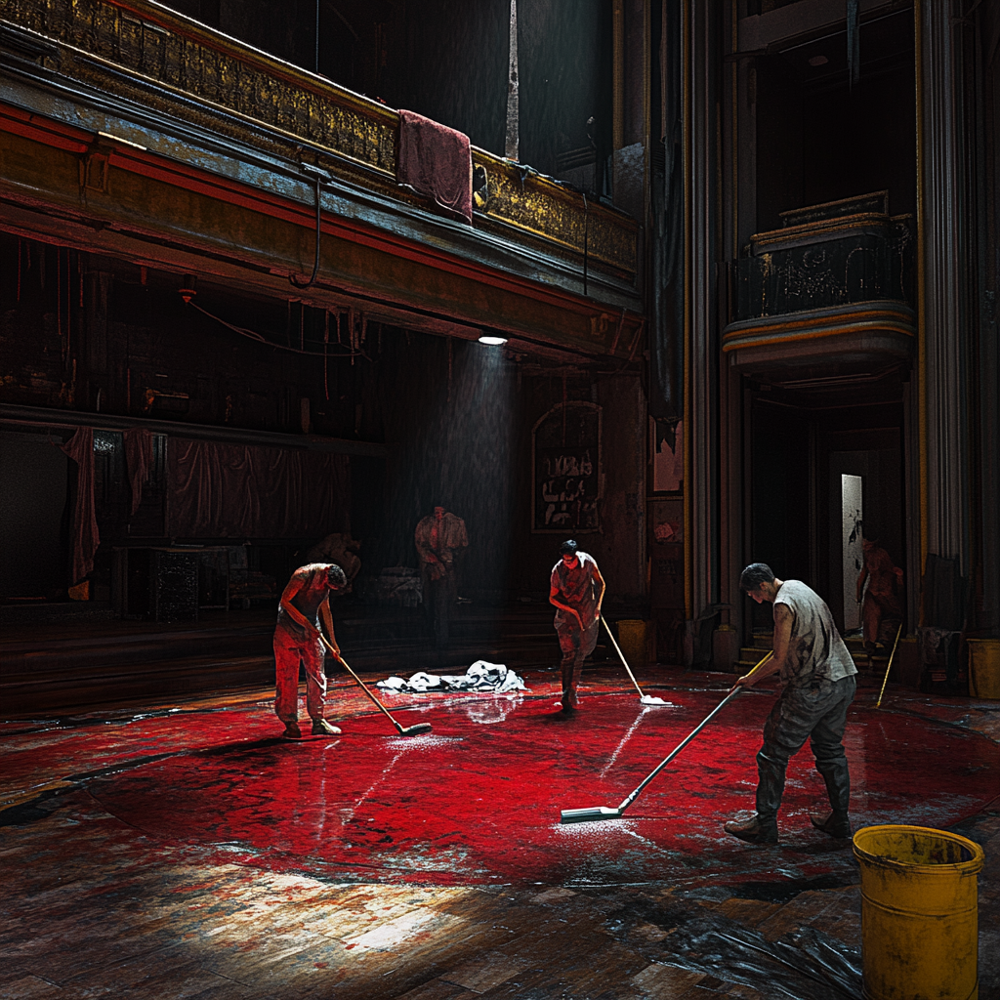
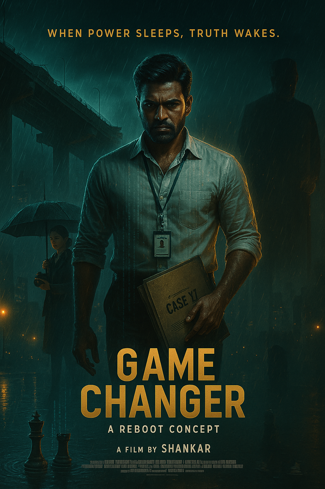
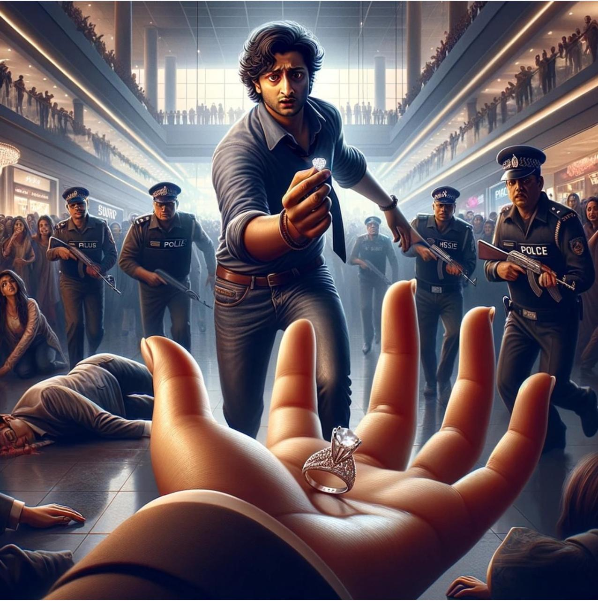
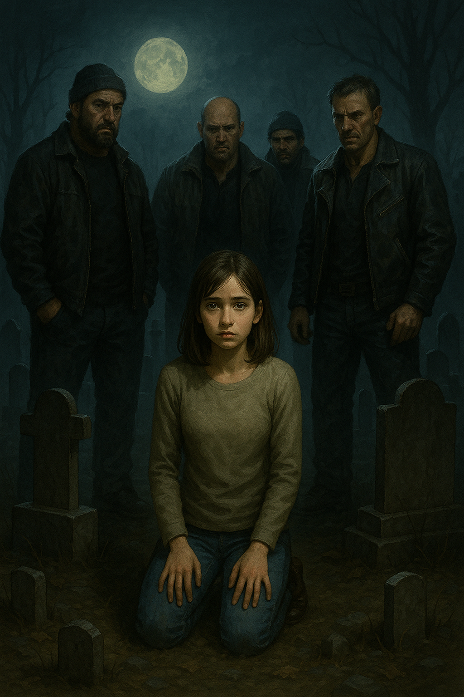
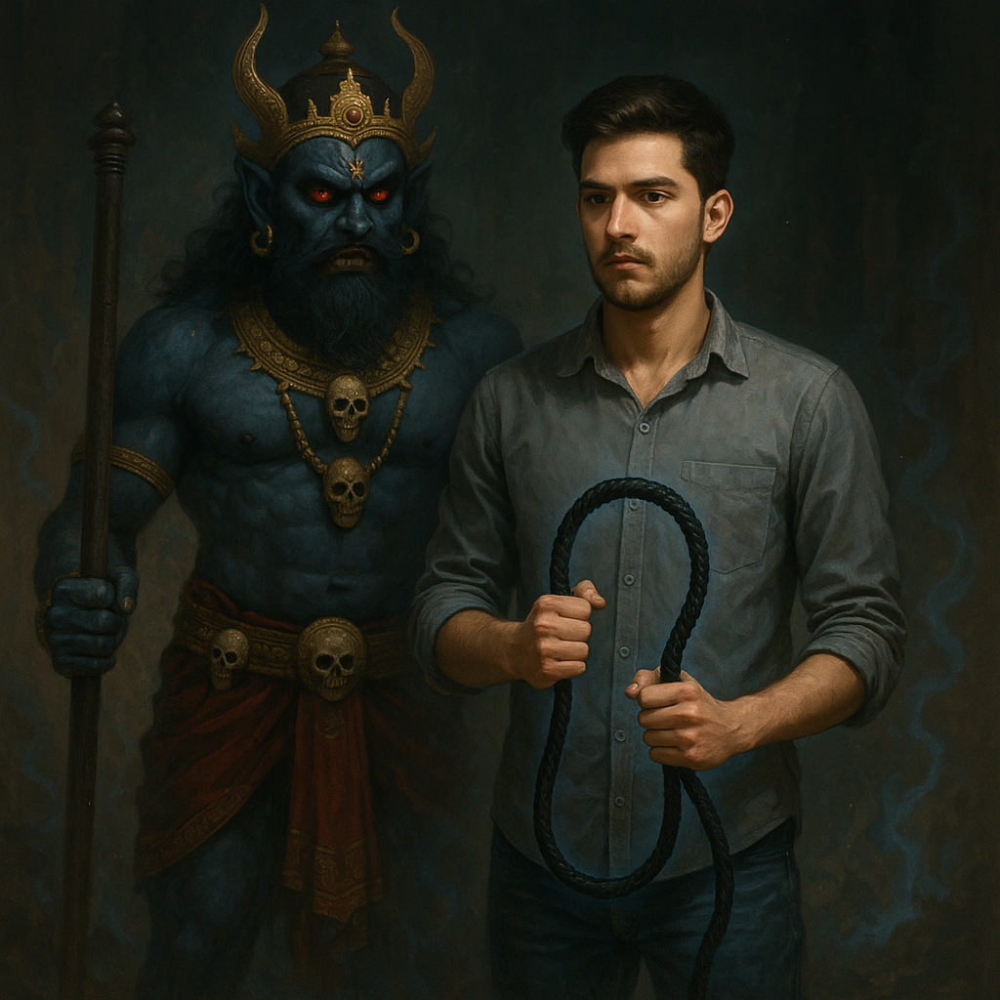

SCENE 01THRILLER / READ

Mystery & dramaMAD
Five friends. A missing body. A very bad night.
Read the storyWelcome inside my head. A wall of mysteries, unfinished worlds, and movies I couldn’t stop rewriting.
PICK YOUR PLOT ↓5 stories

Mystery & dramaFive friends. A missing body. A very bad night.
Read the story
A different cutSame core idea. A different way to tell the story.
In development
Life of Viraj and EshaA story waiting for its next scene.
In development
On the drawing boardThe next world is still taking shape.
In development
From the story vaultAnother idea. Another world to step into.
In developmentNO ALGORITHMS. JUST IMAGINATION.